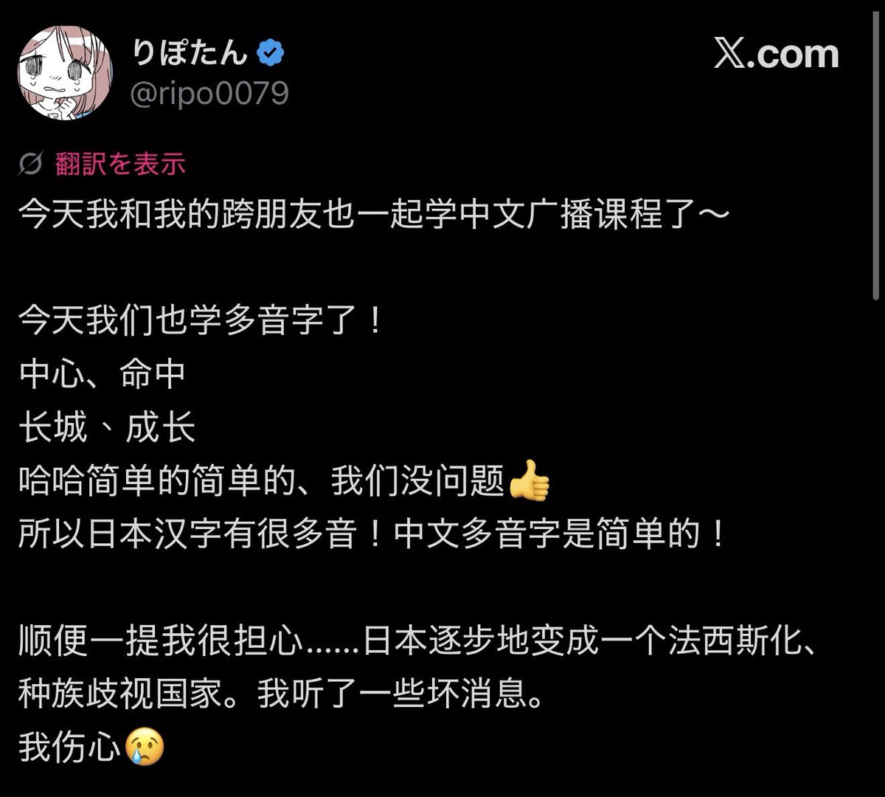

@k0rnblumeR @SakurabaEma_ITN 「中国法西斯化」并不能证明「日本没有法西斯化」。
環状線承认中国进来的民族主义思潮越来越极端。而就環状線对日推的观察，和環状線 4 年前上推时相比，现在在的ネトウヨ更多更极端。環状線认为说日本「法西斯化」虽不准确，但大方向是对的，日本现在的确在右转，尤其高市早苗上台以后。

環状線承认中国进来的民族主义思潮越来越极端。而就環状線对日推的观察，和環状線 4 年前上推时相比，现在在的ネトウヨ更多更极端。環状線认为说日本「法西斯化」虽不准确，但大方向是对的，日本现在的确在右转，尤其高市早苗上台以后。

@CyberKanjousen @SakurabaEma_ITN 不僅僅是讚美中國。她之前還在說日本在法西斯化，我就感到很困惑了。到底是什麼地方的人在說「留島不留人」呢？什麼地方的人在說「核平日本」呢？什麼地方的人給韓國，日本，美國，印度，非洲人起了各種難聽的外號呢？好難猜呀（？ https://t.co/Nnw76ukPy9